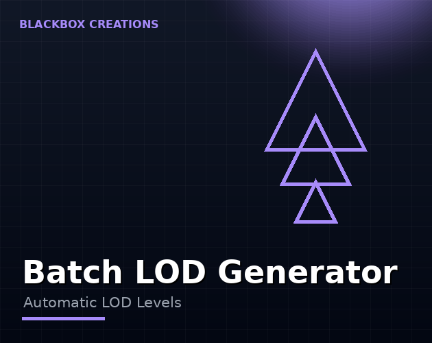

Tools / Batch LOD Generator
LOD levels, one model at a time, is a special kind of tedium. Point this at your model library and generate LODs for everything in a single click — wired straight into Unity's LODGroup.
Instant download & priority support
One-time purchase · Instant download · Free minor updates
Buy nowAlso on the Unity Asset Store

Level of Detail is one of the highest-ROI optimizations in 3D games: distant objects render cheaply, near objects render fully. The catch has always been authoring time. Batch generation removes that cost entirely.
Teams and solo devs with large model counts — open worlds, asset-heavy scenes, mobile games where every triangle counts at distance.
Of all 3D optimizations, level of detail gives you the most frame time per minute of work. The logic is brutal and simple: a prop fifty meters away does not need the same triangles as a prop two meters away, but without LODs, Unity renders both at full detail. Multiply that waste across hundreds of props and you get the single most common cause of GPU-bound scenes. LODs fix it by swapping in cheaper versions of each model as distance grows — and once authored, they cost nothing at runtime beyond the swap itself.
Authoring LODs by hand is exactly as tedious as it sounds, which is why most projects never do it for their full library. Batch LOD Generator removes the authoring cost: point it at your model library, and it generates LOD levels for everything in one click. Each model's levels are wired into Unity's LODGroup component automatically, so the engine handles the distance-based swapping with zero runtime code from you.
Unity's LODGroup swaps a model's rendered version based on how much screen space it occupies. Close up: full detail. Mid-distance: the first reduction. Far away: the cheapest version — or culled entirely. The thresholds are the standard LODGroup screen-size percentages, so the behavior is the same system Unity developers already know, just with the authoring done for them.
Honest answer: for the vast majority of props and environment models, generated LODs are more than good enough — nobody inspects a background crate at LOD2. Reserve hand-authoring for hero assets where silhouette changes would be noticeable. That split — generated for the many, hand-made for the few — is how professional teams actually work, and it is the workflow this tool is built for.
On Quest and mobile, LODs are not optional polish — they are how you hit frame rate at all. A workable starting strategy: full detail only for objects within a few meters of the player, a first reduction kicking in as soon as objects leave interaction range, and aggressive cuts beyond that. Batch generation makes this strategy affordable because you apply it to the whole library at once instead of hand-tuning per asset. The projects that struggle are the ones with no LODs on 80% of props; the ones that ship smoothly are the ones where every prop has at least one cheaper version.
LOD (Level of Detail) is how games stay fast: near objects render full detail, distant ones render cheap versions. The Batch LOD Generator builds those versions — LOD1, LOD2, LOD3 — for whole model libraries in one click and wires them into Unity's LODGroup automatically. If you have been searching for the best LOD generator for Unity or how to generate LODs without doing it model by model, this is the tool.
For the vast majority of props and environment models, generated LODs are more than good enough — reserve hand-authoring for hero assets.
Built for recent Unity LTS releases and the standard LODGroup workflow.
Multiple stepped-down levels per model, so Unity has cheap versions ready at every distance band. Your source models stay untouched — the generated levels sit alongside them in the LODGroup.
The tool is built for recent Unity LTS releases and the standard LODGroup workflow, so it slots into the pipeline most projects already use.
Some transition is inherent to all LOD systems. Keeping reductions gradual across levels and tuning LODGroup screen-size thresholds for your art style keeps swaps subtle — standard practice for any LOD setup.
Level of Detail: Unity's LODGroup swaps a model between high-detail and low-detail versions based on camera distance, so the GPU only renders what the player can actually see. It is the single biggest win for open scenes.
Point the Batch LOD Generator at your model folder, choose how many levels and how aggressive each reduction is, and run it once — every model gets LOD1+ versions generated and assigned to LODGroups automatically.
Unity has no built-in batch LOD generation — that is the gap this fills. Compared to doing it per-model in external tools, batch generation with direct LODGroup wiring is the fastest path from library to optimized scene.
Yes — generated levels are assigned directly to LODGroup components with sensible screen-size thresholds you can tune per project.